한국사능력검정시험-심화 (2015-08-08 기출문제)
1. (가) 시대의 생활 모습으로 옳은 것은? [1점]
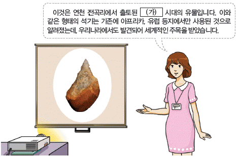
- 주로 동굴이나 막집에서 살았다.
- 가락바퀴를 이용하여 실을 뽑았다.
- 지배자의 무덤으로 고인돌을 만들었다.
- 거푸집을 이용하여 세형 동검을 제작하였다.
- 빗살무늬 토기를 사용하여 식량을 저장하였다.
(정답률: 95%)

2. 밑줄 그은 ‘이 나라’에 대한 설명으로 옳은 것은? [2점]
- 신성 지역인 소도가 존재하였다.
- 혼인 풍습으로 서옥제가 있었다.
- 여러 가(加)들이 별도로 사출도를 다스렸다.
- 매년 10월에 무천이라는 제천 행사를 열었다.
- 사회 질서를 유지하기 위해 8조법을 만들었다.
(정답률: 88%)
3. (가), (나) 전쟁에 대한 설명으로 옳은 것은? [2점]
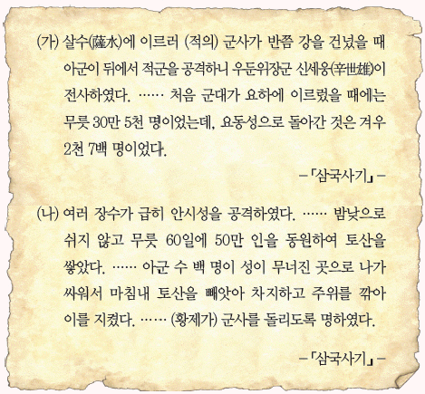
- (가) - 나·당 연합군이 평양성을 공격하였다.
- (가) - 을지문덕이 이끄는 고구려군이 수의 군대를 크게 물리쳤다.
- (나) - 수 양제가 대군을 보내 고구려를 침공하였다.
- (나) - 관구검이 이끄는 위의 군대가 고구려를 침략하였다.
- (가), (나) - 연개소문이 주도하여 당군의 침략에 맞서 싸웠다.
(정답률: 89%)
4. 밑줄 그은 ‘태왕’에 대한 설명으로 옳은 것은? [2점]
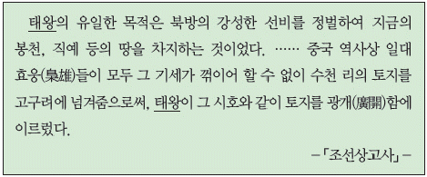
- 태학을 설립하여 인재를 양성하였다.
- 영락이라는 독자적인 연호를 사용하였다.
- 전진의 순도를 통해 불교를 수용하였다.
- 당의 침입에 대비하여 천리장성을 쌓았다.
- 평양으로 천도하여 남진 정책을 본격화하였다.
(정답률: 88%)
5. (가), (나) 사이에 있었던 사실로 옳은 것은? [3점]
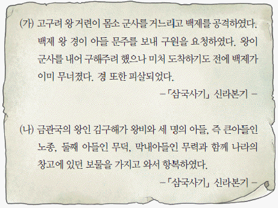
- 백제가 웅진으로 천도하였다.
- 신라가 대가야를 멸망시켰다.
- 고구려가 낙랑군을 축출하였다.
- 신라가 매소성에서 당을 물리쳤다.
- 신라가 함경도 지역까지 진출하였다.
(정답률: 69%)
6. 다음 가상 인터뷰의 주인공에 대한 설명으로 옳은 것은? [2점]
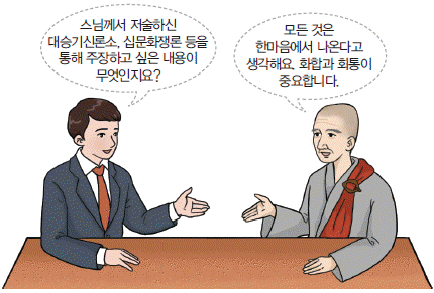
- 황룡사 구층 목탑의 건립을 건의하였다.
- 무애가를 만들어 불교의 대중화에 힘썼다.
- 국청사를 중심으로 해동 천태종을 창시하였다.
- 불교 개혁을 주장하며 수선사 결사를 제창하였다.
- 유불 일치설을 주장하여 유교와 불교의 조화를 도모하였다.
(정답률: 77%)
7. 밑줄 그은 ‘이들’에 대한 설명으로 옳은 것은? [3점]
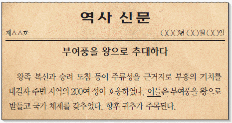
- 완산주를 도읍으로 정하였다.
- 안동 도호부를 요동으로 몰아냈다.
- 백강에서 왜군과 함께 당군에 맞서 싸웠다.
- 중국의 오월과 후당에 외교 사절을 보냈다.
- 신라의 금성을 습격하여 경애왕을 살해하였다.
(정답률: 67%)
8. (가) 단체에 대한 설명으로 옳은 것은? [1점]
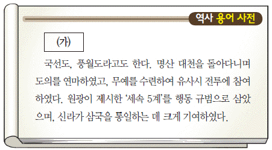
- 경당에서 글과 활쏘기를 배웠다.
- 진흥왕 때 국가적인 조직으로 정비되었다.
- 박사와 조교를 두어 유교 경전을 가르쳤다.
- 정사암에 모여 국가의 중대사를 결정하였다.
- 귀족들로 구성되어 만장일치제로 운영되었다.
(정답률: 85%)
9. (가)에 들어갈 문화유산으로 옳은 것은? [2점]
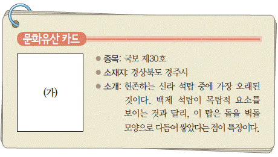
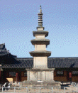
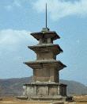
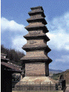
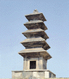
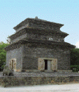
(정답률: 68%)
10. 다음 문화유산을 만든 국가에 대한 설명으로 옳은 것을 <보기>에서 고른 것은? [2점]
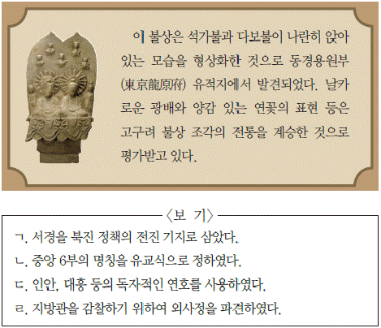
- ㄱ, ㄴ
- ㄱ, ㄷ
- ㄴ, ㄷ
- ㄴ, ㄹ
- ㄷ, ㄹ
(정답률: 70%)
11. 밑줄 그은 ‘왕’의 업적으로 옳은 것은? [2점]
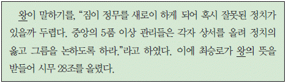
- 관학의 재정 기반을 마련하고자 양현고를 두었다.
- 빈민을 구제하기 위하여 흑창을 처음 설치하였다.
- 쌍기의 건의를 받아들여 과거 제도를 실시하였다.
- 전국의 주요 지역에 12목을 설치하고 지방관을 파견하였다.
- 전민변정도감을 두어 권문세족의 경제 기반을 약화시키고자 하였다.
(정답률: 81%)
12. (가)~(마)에 들어갈 내용으로 옳은 것은? [2점]
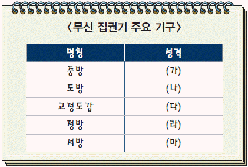
- (가) - 국정 자문을 위한 문신들의 숙위(宿衛) 기구
- (나) - 최우의 집에 설치된 인사 행정 담당 기구
- (다) - 최씨 무신 정권에서 국정을 총괄한 최고 권력 기구
- (라) - 치안 유지 및 전투의 임무를 수행한 군사 기구
- (마) - 재신과 추신으로 구성되어 법제와 격식을 논의한 회의 기구
(정답률: 79%)
13. (가)의 침입에 대한 고려의 대응으로 옳은 것은? [3점]
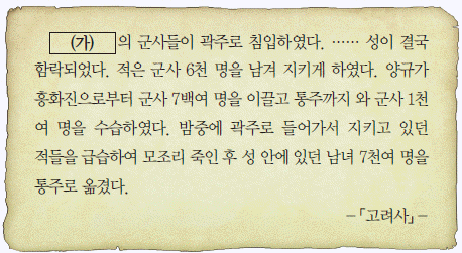
- 별무반을 편성하고 동북 9성을 축조하였다.
- 김윤후의 활약으로 처인성에서 승리하였다.
- 화포를 이용하여 진포에서 대승을 거두었다.
- 초조 대장경을 만들어 적을 물리치기를 기원하였다.
- 쌍성총관부를 공격하여 철령 이북의 땅을 수복하였다.
(정답률: 62%)
14. (가) 지역에서 있었던 사실로 옳은 것은? [2점]
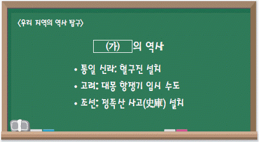
- 육영 공원이 설립되었다.
- 최초의 근대적 조약이 체결되었다.
- 조선 형평사 중앙 총본부가 있었다.
- 물산 장려 운동이 처음 시작되었다.
- 영국군에 의해 불법으로 점령되었다.
(정답률: 75%)
15. 다음 자료에 해당하는 문화유산으로 옳은 것은? [2점]
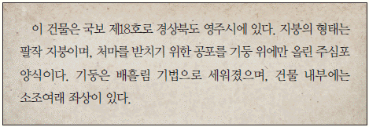
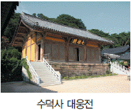
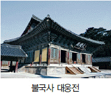
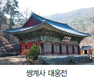
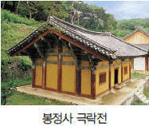
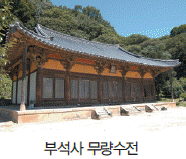
(정답률: 68%)
16. 밑줄 그은 ‘이 역사서’에 대한 설명으로 옳은 것은? [1점]
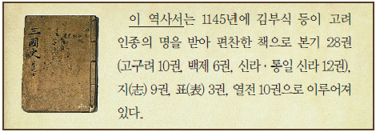
- 유교 사관에 기초하여 기전체 형식으로 서술하였다.
- 자주적 입장에서 단군의 건국 이야기를 수록하였다.
- 사초, 시정기 등을 바탕으로 실록청에서 편찬하였다.
- 불교사를 중심으로 고대의 민간 설화 등을 수록하였다.
- 고구려 건국 시조의 일대기를 서사시 형태로 서술하였다.
(정답률: 76%)
17. (가)~(라) 제도를 시행된 순서대로 옳게 나열한 것은? [3점]
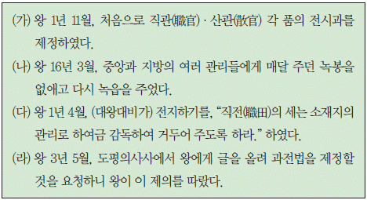
- (가) - (나) - (다) - (라)
- (가) - (나) - (라) - (다)
- (나) - (가) - (다) - (라)
- (나) - (가) - (라) - (다)
- (다) - (나) - (가) - (라)
(정답률: 41%)
18. (가) 세시 풍속에 해당하는 속담으로 적절한 것은? [1점]
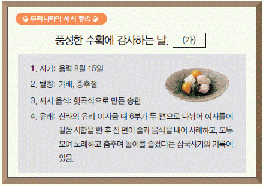
- 입춘 거꾸로 붙였나.
- 우수 경칩에 대동강 물이 풀린다.
- 옷은 시집올 때처럼 음식은 한가위처럼.
- 게으른 선비 설날에 다락에 올라가서 글 읽는다.
- 정월 보름달을 먼저 보는 사람은 복을 많이 받는다.
(정답률: 72%)
19. (가) 화폐에 대한 설명으로 옳은 것은? [1점]
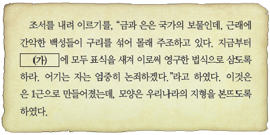
- 청과의 교역에 사용되었다.
- 조선 시대에 전국적으로 유통되었다.
- 우리나라에서 최초로 발행된 화폐였다.
- 입구가 넓어 활구라고 불리기도 하였다.
- 경복궁 중건의 재원을 마련하고자 발행되었다.
(정답률: 69%)
20. 밑줄 그은 ‘왕’의 재위 시기에 있었던 사실로 옳은 것은? [2점]
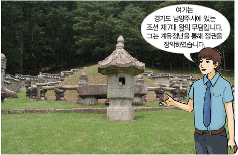
- 초계문신제를 실시하여 관리를 재교육하였다.
- 집현전을 폐지하여 왕권을 강화하고자 하였다.
- 현량과를 실시하여 신진 사림을 등용하고자 하였다.
- 균역법을 시행하여 군역의 부담을 줄여주고자 하였다.
- 탕평비를 건립하여 붕당의 폐해를 경계하고자 하였다.
(정답률: 78%)
21. 다음 그림이 그려진 당시에 볼 수 있는 모습으로 옳은 것은? [2점]
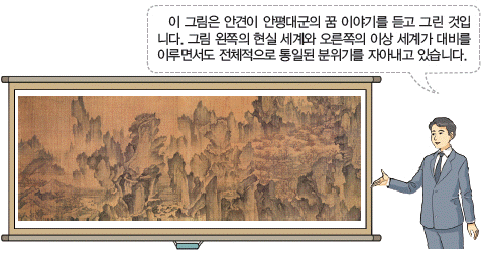
- 삼강행실도를 읽고 있는 양반
- 고구마를 밭에 심고 있는 농민
- 장용영에서 훈련을 받고 있는 군인
- 천리경으로 별자리를 보고 있는 관리
- 동의수세보원 처방에 따라 약방문을 짓고 있는 의원
(정답률: 62%)
22. 다음 기관에 대한 설명으로 옳은 것은? [3점]
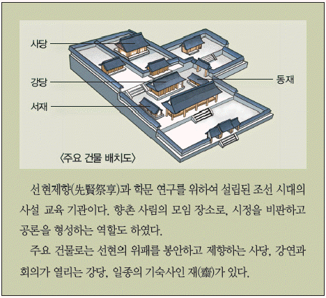
- 좌수와 별감을 선발하여 운영되었다.
- 중앙에서 파견된 교수나 훈도가 지도하였다.
- 국자학, 태학, 사문학으로 나누어 교육하였다.
- 전국의 부·목·군·현에 하나씩 설립되었다.
- 국왕으로부터 편액과 함께 서적 등을 받기도 하였다.
(정답률: 60%)
23. (가) 인물에 대한 설명으로 옳은 것은? [2점]
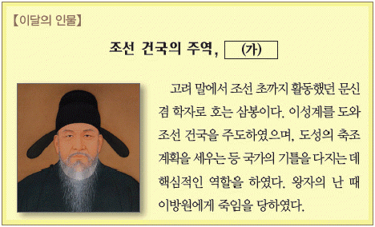
- 불교 이론을 비판한 불씨잡변을 저술하였다.
- 만권당에서 원의 성리학자들과 교유하였다.
- 공납의 부담을 줄이고자 수미법을 주장하였다.
- 세계 지도인 혼일강리역대국도지도를 만들었다.
- 군사력 강화를 위해 훈련도감 설치를 건의하였다.
(정답률: 83%)
24. 다음 논의가 이루어진 직접적인 배경으로 옳은 것은? [2점]
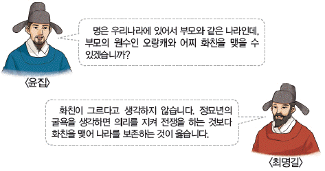
- 청이 조선에 군신 관계를 요구하였다.
- 일본의 침략으로 선조가 의주로 피난하였다.
- 청이 나선 정벌을 위하여 군대 파견을 요청하였다.
- 강홍립이 이끄는 부대가 명의 요청으로 파병되었다.
- 이괄이 후금의 침입에 대비하여 평안도에 주둔하였다.
(정답률: 62%)
25. 다음 글을 쓴 인물에 대한 설명으로 옳은 것은? [2점]
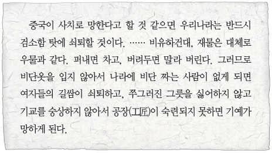
- 북한산비가 진흥왕 순수비임을 밝혔다.
- 서얼 출신으로 규장각 검서관에 기용되었다.
- 양반전에서 양반의 위선과 무능을 비판하였다.
- 현지 답사를 바탕으로 지리서인 택리지를 저술하였다.
- 산줄기, 물줄기, 도로 등을 표시한 대동여지도를 완성하였다.
(정답률: 65%)
26. (가)에 들어갈 작품으로 옳지 않은 것은? [2점]
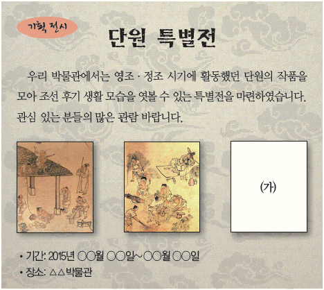
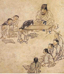
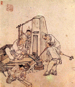
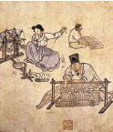
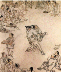
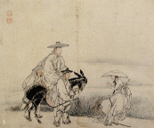
(정답률: 71%)
27. (가) 종교에 대한 설명으로 옳은 것은? [1점]
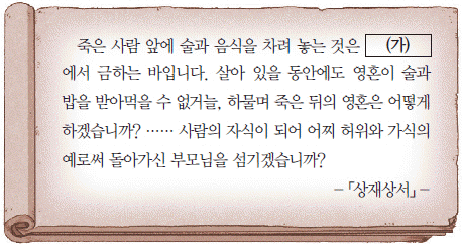
- 하늘에 제사 지내는 초제를 거행하였다.
- 왕조 교체를 예언하며 백성의 호응을 얻었다.
- 인내천 사상을 내세워 인간 평등을 주장하였다.
- 청을 다녀온 사신들에 의하여 서학으로 소개되었다.
- 유·불·선을 바탕으로 민간 신앙의 요소까지 포함하였다.
(정답률: 71%)
28. 다음 대화에 나타난 사건이 일어난 시기를 연표에서 옳게 고른 것은? [2점]
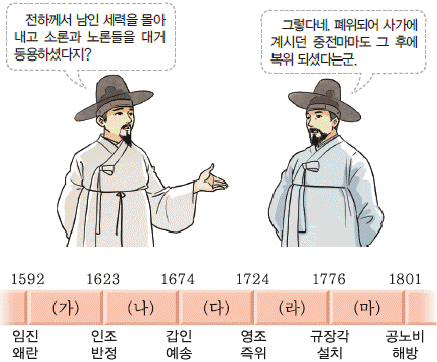
- (가)
- (나)
- (다)
- (라)
- (마)
(정답률: 69%)
29. (가)~(마) 상인에 대한 설명으로 옳지 않은 것은? [2점]
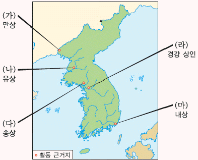
- (가) - 책문 후시를 통해 대외 무역에 종사하였다.
- (나) - 신해통공 이후에도 금난전권을 행사하였다.
- (다) - 사개치부법이라는 독자적인 회계법을 창안하였다.
- (라) - 한강을 중심으로 선박을 이용하여 운송업에 종사하였다.
- (마) - 왜관을 중심으로 대일 무역을 전개하였다.
(정답률: 67%)
30. 다음 자료가 저술된 시기에 있었던 사실로 옳은 것은? [3점]
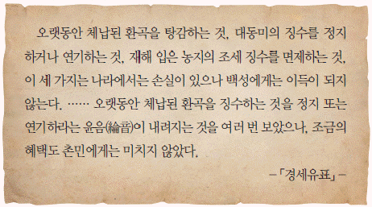
- 외척 간의 대립으로 을사사화가 발생하였다.
- 왕권을 강화하기 위하여 6조 직계제가 실시되었다.
- 공신과 왕족의 사병이 혁파되고 군사권이 강화되었다.
- 비변사를 중심으로 소수의 가문이 권력을 행사하였다.
- 이조 전랑 임명을 둘러싸고 사림이 동인과 서인으로 나뉘었다.
(정답률: 67%)
31. (가)~(마)에 들어갈 내용으로 적절하지 않은 것은? [2점]
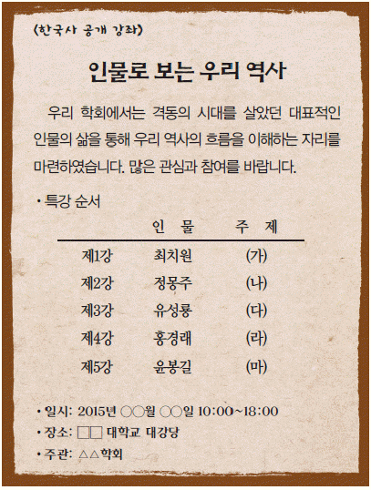
- (가) - 시무책을 제시한 6두품 지식인
- (나) - 절개와 의리를 지킨 고려의 충신
- (다) - 전쟁의 참상을 기록한 징비록의 저자
- (라) - 반봉건 · 반외세의 기치를 든 동학 농민군 지도자
- (마) - 독립을 위해 온 몸을 던진 한인 애국단원
(정답률: 71%)
32. (가)에 들어갈 답변으로 옳은 것은? [1점]
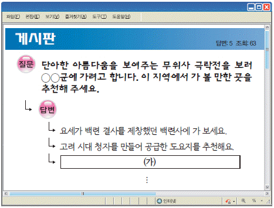
- 율곡 이이가 태어난 오죽헌에 가 보세요.
- 정약용이 유배 생활을 했던 다산 초당을 추천해요.
- 퇴계 이황의 학덕을 기리는 도산 서원을 추천해요.
- 팔만대장경판을 보관하고 있는 해인사를 추천해요.
- 대가야의 위용을 보여주는 지산동 고분군에 가 보세요.
(정답률: 31%)
33. 다음 상소가 올려진 시기를 연표에서 옳게 고른 것은? [2점]
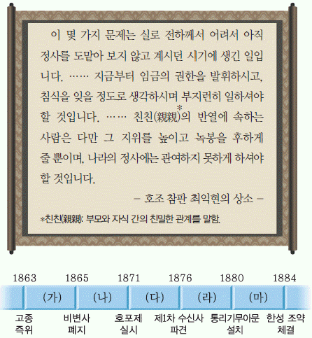
- (가)
- (나)
- (다)
- (라)
- (마)
(정답률: 50%)
34. 교사의 질문에 대한 학생의 답변으로 옳은 것은? [2점]
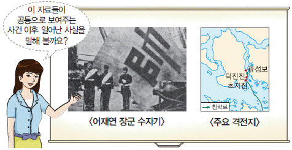
- 종로와 전국 각지에 척화비가 세워졌습니다.
- 오페르트가 남연군 묘를 도굴하려 하였습니다.
- 평양 관민들에 의해 제너럴 셔먼호가 불탔습니다.
- 외규장각 건물이 불타고 의궤가 약탈당하였습니다.
- 프랑스 로즈 제독의 함대가 양화진을 침입하였습니다.
(정답률: 71%)
35. (가), (나) 조약에 대한 설명으로 옳은 것은? [2점]
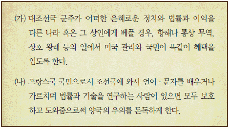
- (가) - 양곡의 무제한 유출과 무관세 조항을 담았다.
- (가) - 외국 상인의 내지 통상권을 최초로 규정하였다.
- (나) - 공사관 경비 명목의 군대 주둔 조항을 두었다.
- (나) - 프랑스가 천주교 포교 자유를 인정받는 계기가 되었다.
- (가), (나) - 조약 체결 이후 사절단으로 보빙사가 파견되었다.
(정답률: 67%)
36. 밑줄 그은 ‘이 사건’에 대한 설명으로 옳은 것은? [3점]
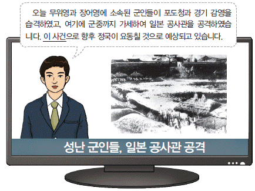
- 훈련대가 해산되는 원인을 제공하였다.
- 포접제가 활용되어 조직적으로 전개되었다.
- 청의 내정 간섭이 본격화되는 결과를 가져왔다.
- 청·일 양국의 군대가 조선에서 철수하는 계기가 되었다.
- 개화당이 민씨 정권을 타도하고 새로운 정권을 수립하고자 하였다.
(정답률: 73%)
37. (가)~(마) 문화유산에 대한 설명으로 옳지 않은 것은? [2점]
- (가) - 광복 이후 김구의 집무실과 사저로 이용되었다.
- (나) - 고종이 을미사변 이후 거처를 옮긴 곳이다.
- (다) - 외교권을 강탈당한 을사늑약이 체결된 곳이다.
- (라) - 미·소 공동 위원회가 개최된 곳이다.
- (마) - 교육 입국 조서에 근거하여 세워진 교원 양성 학교이다.
(정답률: 54%)
38. 다음 인물의 활동으로 옳은 것은? [1점]
- 가갸날을 제정하고 기관지인 한글을 발행하였다.
- 인재를 양성하기 위하여 대성 학교를 설립하였다.
- 조선학 운동을 주도하여 여유당전서를 간행하였다.
- 서유견문을 집필하여 서양 근대 문명을 소개하였다.
- 독사신론을 저술하여 민족 중심의 역사 서술을 하였다.
(정답률: 70%)
39. (가), (나) 사이에 있었던 사실로 옳은 것은? [3점]
- 고종의 밀지를 받아 독립 의군부가 조직되었다.
- 13도 창의군이 결성되어 서울 진공 작전을 전개하였다.
- 헤이그에서 열린 만국 평화 회의에 특사가 파견되었다.
- 유생 출신 유인석이 이끄는 부대가 충주성을 점령하였다.
- 해산된 진위대 군인들이 합류하여 의병의 전투력이 강화되었다.
(정답률: 46%)
40. 밑줄 그은 ‘이 사업’에 대한 설명으로 옳은 것을 <보기>에서 고른 것은? [2점]
- ㄱ, ㄴ
- ㄱ, ㄷ
- ㄴ, ㄷ
- ㄴ, ㄹ
- ㄷ, ㄹ
(정답률: 55%)
41. 다음 자료의 전투에 참여한 독립군 부대에 대한 설명으로 옳은 것은? [2점]
- 대한민국 임시 정부의 직할 부대로 창설되었다.
- 중국 관내에서 결성된 최초의 한인 무장 부대였다.
- 조선 혁명 간부 학교를 세워 군사력을 강화하였다.
- 중국 호로군과 연합 작전을 통해 항일 전쟁을 전개하였다.
- 러시아에 의해 무장 해제를 당하여 세력이 크게 약화되었다.
(정답률: 63%)
42. 다음 가상 일기에 나타난 민족 운동에 대한 설명으로 옳은 것은? [2점]
- 신간회의 지원 속에 전국 각지로 확산되었다.
- 이른바 문화 통치로 전환되는 배경이 되었다.
- 대한민국 임시 정부가 수립되는 데 영향을 주었다.
- 한·일 학생 사이의 충돌 사건이 발단이 되어 일어났다.
- 국내에서 민족 유일당 운동이 전개되는 계기를 마련하였다.
(정답률: 64%)
43. 다음 법령이 제정된 이후 일제의 정책으로 옳은 것은? [3점]
- 한국인에 한하여 적용하는 조선 태형령이 시행되었다.
- 한국인의 기업 활동을 억제하기 위해 회사령이 발표되었다.
- 식민지 교육 방침을 규정한 제1차 조선 교육령이 시행되었다.
- 식민 통치의 재정 기반을 확대하고자 토지 조사 사업이 실시되었다.
- 독립 운동을 탄압하기 위한 조선 사상범 보호 관찰령이 공포되었다
(정답률: 71%)
44. (가) 지역에서 일어난 민족 운동에 대한 설명으로 옳은 것은? [2점]
- 서전서숙이 설립되어 민족 교육을 실시하였다.
- 신한 청년당이 파리 강화 회의에 대표를 파견하였다.
- 대한 광복군 정부가 세워져 무장 독립 투쟁을 준비하였다.
- 대조선 국민 군단이 조직되어 독립군 사관을 양성하였다.
- 유학생들이 중심이 되어 2·8 독립 선언서를 발표하였다.
(정답률: 58%)
45. 다음 자료가 발표된 이후에 볼 수 있는 모습으로 옳은 것은? [2점]
- 헌병 경찰에게 벌금형을 부과받는 농민
- 신간회 창립 대회를 취재하고 있는 기자
- 국채 보상 운동의 모금에 참여하고 있는 상인
- 조선 민립 대학 기성 준비회 발족에 참석하는 교사
- 국민 징용령에 의해 강제 노동에 끌려가는 청년
(정답률: 81%)
46. 다음 인물의 활동으로 옳은 것은? [1점]
- 동양 척식 주식회사에 폭탄을 투척하였다.
- 국권 피탈에 앞장섰던 이완용을 저격하였다.
- 의열단을 결성하여 무장 투쟁을 전개하였다.
- 한국 광복군 지휘관으로 국내 진공 작전을 준비하였다.
- 민중의 직접 혁명을 주장하는 조선 혁명 선언을 집필하였다.
(정답률: 70%)
47. 다음 헌법이 시행된 시기의 사실로 옳지 않은 것은? [2점]
- 반국가 활동 규제를 위한 국가보안법이 만들어졌다.
- 유상 매수, 유상 분배를 규정한 농지개혁법이 제정되었다.
- 일제가 남긴 재산 처리를 위한 귀속재산처리법이 제정되었다.
- 친일파 청산을 위한 반민족 행위 특별 조사 위원회가 활동하였다.
- 자립 경제 구축을 위한 제1차 경제 개발 5개년 계획이 추진되었다.
(정답률: 71%)
48. 다음 자료의 단체에 대한 설명으로 옳은 것을 <보기>에서 고른 것은? [3점]
- ㄱ, ㄴ
- ㄱ, ㄷ
- ㄴ, ㄷ
- ㄴ, ㄹ
- ㄷ, ㄹ
(정답률: 36%)
49. 다음 선언문이 발표된 민주화 운동에 대한 설명으로 옳은 것은? [2점]
- 허정 과도 정부 성립의 배경이 되었다.
- 신군부의 비상 계엄 확대에 반대하여 일어났다.
- 4·13 호헌 조치에 국민들이 저항하며 시작되었다.
- 관련 기록물이 유네스코 세계 유산으로 등재되었다.
- 직선제 개헌을 약속한 6·29 민주화 선언을 이끌어냈다.
(정답률: 52%)
50. (가) 정부 시기의 사실로 옳은 것은? [1점]
- 한·일 협정을 체결하였다.
- 중국, 소련 등과 수교하였다.
- 금강산 관광 사업을 시작하였다.
- 한·미 상호 방위 조약을 체결하였다.
- 경제 협력 개발 기구(OECD)에 가입하였다.
(정답률: 61%)